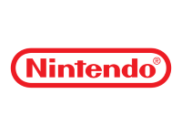

Nintendo es una compañía japonesa de videojuegos fundada en 1889 en Kioto, inicialmente dedicada a la producción de cartas Hanafuda. A lo largo de su historia, se transformó en un gigante de la industria del entretenimiento interactivo, consolidándose como uno de los nombres más influyentes y reconocidos en el ámbito de los videojuegos.
Conocida por su enfoque en la innovación y el entretenimiento familiar, Nintendo ha creado franquicias icónicas como Super Mario, The Legend of Zelda, Pokémon y Donkey Kong. Además, ha revolucionado el mercado con consolas emblemáticas
como la NES, la Game Boy, la Wii y la Nintendo Switch. Su legado se basa en su capacidad para combinar creatividad,
tecnología y experiencias memorables que han cautivado a jugadores de todas las edades a lo largo de las décadas.

Ahora te mostraré cuales pueden ser tus mejores opciones si tienes una nintendo switch y quieres ampliar tu catálogo de videojuegos:
Yuzu comenzó enfocándose en juegos Homebrew, pero con el tiempo se ha expandido al emular títulos comerciales de Nintendo Switch, que ahora están disponibles para su compra.
Desarrollado por los creadores de Citra, el popular emulador de Nintendo 3DS, Yuzu se destaca como el primer emulador de
Switch en el mercado. Este software gratuito y de código abierto, escrito en C++, está diseñado para replicar las funciones esenciales de la consola. Sin embargo, algunos juegos presentan problemas de compatibilidad, lo que afecta su rendimiento en ciertos casos.
A pesar de estas limitaciones, Yuzu ha logrado logros notables, como ejecutar Super Mario Odyssey con una tasa de cuadros comparable a la de la consola original desde 2019, sin errores evidentes en escenarios o retrasos significativos. Esto ha consolidado la confianza de los usuarios, quienes valoran su diseño intuitivo, su lista de juegos compatibles y sus actualizaciones frecuentes. Además, cuenta con una sección de preguntas frecuentes que ofrece
soluciones prácticas a problemas comunes, lo que demuestra el compromiso del equipo con su comunidad.
Características:
- Una gran lista de juegos compatibles.
- Está desarrollado en C++, lo que lo hace altamente portable.
- Puede correr los títulos más populares y recientes sin ningún retraso.
- Es un emulador que consume pocos recursos.
- Los modos gráficos soportados son OpenGL y Vulkan (experimental).
- Existen versiones disponibles para Windows y Linux.
- Se pueden crear y utilizar múltiples perfiles.
Ryujinx es un emulador multiplataforma para Nintendo Switch, compatible con Windows, macOS y Linux, que destaca por su interfaz intuitiva y soporte para conexión inalámbrica local. Desarrollado en C#, ofrece una experiencia de usuario accesible y soporte para aproximadamente 1000 juegos, de los cuales la mitad son completamente jugables. Aunque todavía tiene margen para mejorar, su equipo trabaja constantemente en optimizar su precisión, funcionalidad e interfaz.
Con la capacidad de correr juegos a 60 fps y un enfoque en minimizar errores, Ryujinx es una opción confiable para emular juegos de Switch. Sin embargo, aún no es totalmente compatible con ciertos títulos comerciales. A pesar de esto, su rápida evolución lo posiciona como uno de los mejores emuladores de la consola, ofreciendo una experiencia muy cercana a la de una Switch real.
Características:
- Las resoluciones de la pantalla y la escala se pueden personalizar.
- También hay disponibles varias relaciones de proporción.
- También puedes jugar en línea con tus amigos en modo multijugador.
- La emulación NVDEC se utiliza para soportar los vídeos del juego y escenas de corte.
- Trabaja tanto en Windows como en Linux.